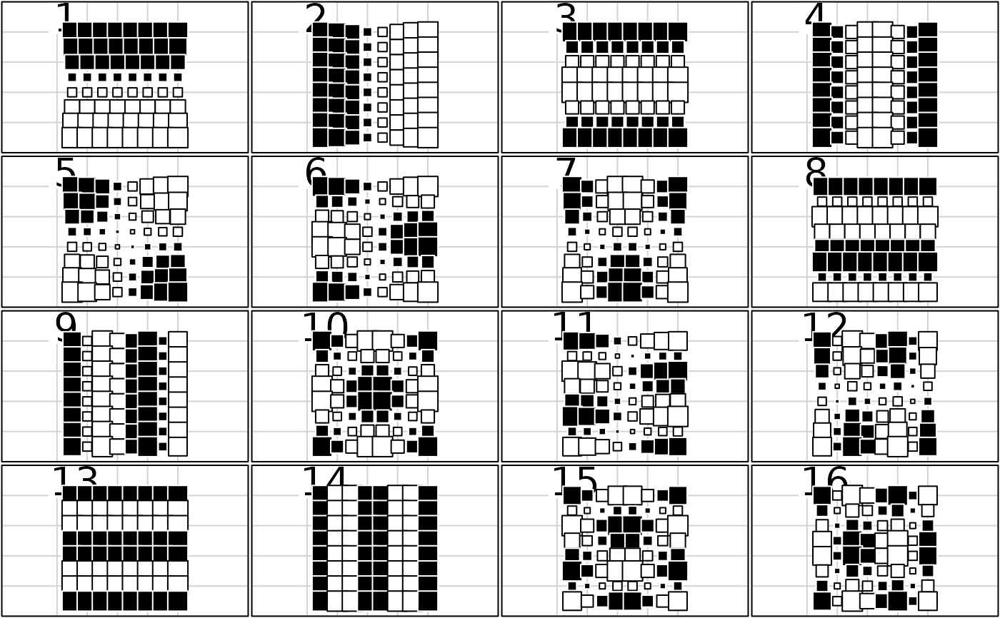
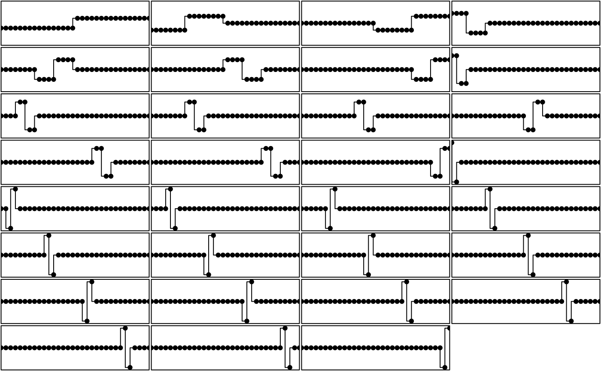
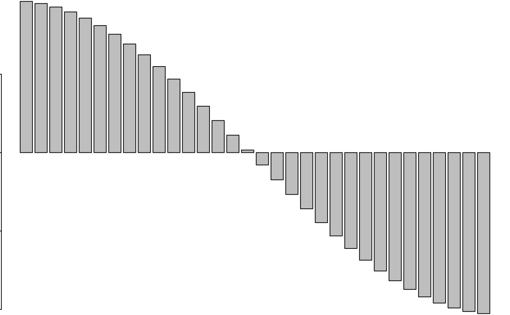
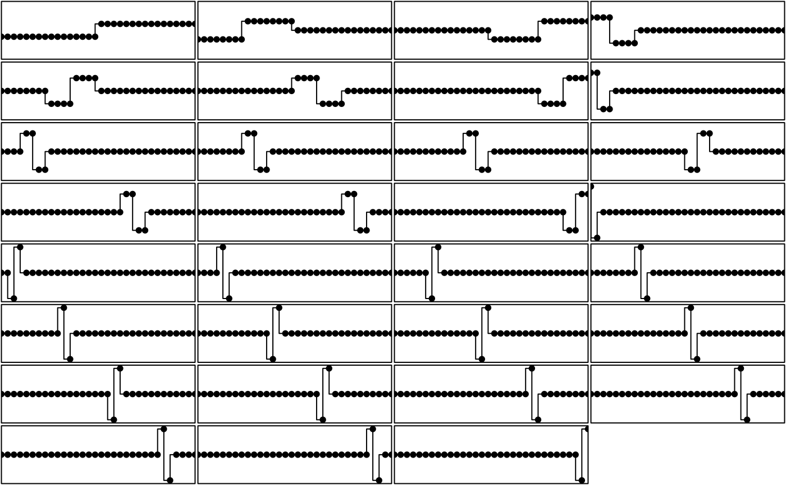
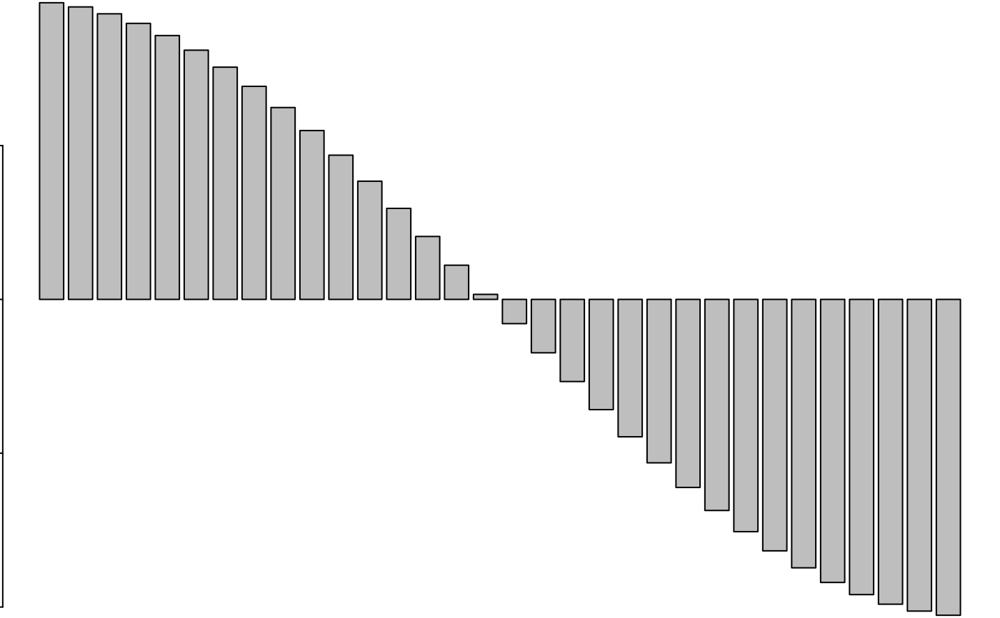

Orthonormal basis for orthonormal transform
orthobasis.RdThese functions returns object of class 'orthobasis' that
contains data frame defining an orthonormal basis.
orthobasic.neig returns the eigen vectors of the matrix N-M where M is the symmetric n by n matrix of the between-sites neighbouring graph and N is the diagonal matrix of neighbour numbers. orthobasis.line returns the analytical solution for the linear neighbouring graph. orthobasic.circ returns the analytical solution for the circular neighbouring graph. orthobsic.mat returns the eigen vectors of the general link matrix M. orthobasis.haar returns wavelet haar basis.
Arguments
- neig
is an object of class
neig- n
is an integer that defines length of vectors
- mat
is a n by n phylogenetic or spatial link matrix
- cnw
if TRUE, the matrix of the neighbouring graph is modified to give Constant Neighbouring Weights
- x, object
is an object of class
orthobasis- nr, nc
the number of rows and columns to be printed
- ...
: further arguments passed to or from other methods
Value
All the functions return an object of class orthobasis containing a data frame.
This data frame defines an orthonormal basis with various attributes:
- names
names of the vectors
- row.names
row names of the data frame
- class
class
- values
optional associated eigenvalues
- weights
weights for the rows
- call
: call
References
Misiti, M., Misiti, Y., Oppenheim, G. and Poggi, J.M. (1993) Analyse de signaux classiques par décomposition en ondelettes. Revue de Statistique Appliquée, 41, 5–32.
Cornillon, P.A. (1998) Prise en compte de proximités en analyse factorielle et comparative. Thèse, Ecole Nationale Supérieure Agronomique, Montpellier.
Author
Sébastien Ollier sebastien.ollier@u-psud.fr
Daniel Chessel
Note
the function orthobasis.haar uses function wavelet.filter from package waveslim.
See also
gridrowcol that defines an orthobasis for square grid,
phylog that defines an orthobasis for phylogenetic tree,
orthogram and mld
Examples
# a 2D spatial orthobasis
w <- gridrowcol(8, 8)
if(adegraphicsLoaded()) {
g1 <- s.value(w$xy, w$orthobasis[, 1:16], pleg.drawKey = FALSE, pgri.text.cex = 0,
ylim = c(0, 10), porigin.include = FALSE, paxes.draw = FALSE)
g2 <- s1d.barchart(attr(w$orthobasis, "values"), p1d.horizontal = FALSE,
labels = names(attr(w$orthobasis, "values")), plabels.cex = 0.7)
} else {
par(mfrow = c(4, 4))
for(k in 1:16)
s.value(w$xy, w$orthobasis[, k], cleg = 0, csi = 2, incl = FALSE,
addax = FALSE, sub = k, csub = 4, ylim = c(0, 10), cgri = 0)
par(mfrow = c(1, 1))
barplot(attr(w$orthobasis, "values"))
}

 # Haar 1D orthobasis
w <- orthobasis.haar(32)
par(mfrow = c(8, 4))
par(mar = c(0.1, 0.1, 0.1, 0.1))
for (k in 1:31) {
plot(w[, k], type = "S", xlab = "", ylab = "", xaxt = "n",
yaxt = "n", xaxs = "i", yaxs = "i", ylim = c(-4.5, 4.5))
points(w[, k], type = "p", pch = 20, cex = 1.5)
}
# a 1D orthobasis
w <- orthobasis.line(n = 33)
par(mfrow = c(8, 4))

par(mar = c(0.1, 0.1, 0.1, 0.1))
for (k in 1:32) {
plot(w[, k], type = "l", xlab = "", ylab = "", xaxt = "n",
yaxt = "n", xaxs = "i", yaxs = "i", ylim = c(-1.5, 1.5))
points(w[, k], type = "p", pch = 20, cex = 1.5)
}
if(adegraphicsLoaded()) {
s1d.barchart(attr(w, "values"), p1d.horizontal = FALSE, labels = names(attr(w, "values")),
plab.cex = 0.7)
} else {
par(mfrow = c(1, 1))
barplot(attr(w, "values"))
}

w <- orthobasis.circ(n = 26)
#par(mfrow = c(5, 5))
#par(mar = c(0.1, 0.1, 0.1, 0.1))
# for (k in 1:25)
# dotcircle(w[, k], xlim = c(-1.5, 1.5), cleg = 0)
par(mfrow = c(1, 1))
#barplot(attr(w, "values"))
if (FALSE) { # \dontrun{
# a spatial orthobasis
data(mafragh)
w <- orthobasis.neig(neig2nb(mafragh$nb))
if(adegraphicsLoaded()) {
s.value(mafragh$xy, w[, 1:8], plegend.drawKey = FALSE)
s1d.barchart(attr(w, "values"), p1d.horizontal = FALSE)
} else {
par(mfrow = c(4, 2))
for(k in 1:8)
s.value(mafragh$xy, w[, k], cleg = 0, sub = as.character(k), csub = 3)
par(mfrow = c(1, 1))
barplot(attr(w, "values"))
}
# a phylogenetic orthobasis
data(njplot)
phy <- newick2phylog(njplot$tre)
wA <- phy$Ascores
wW <- phy$Wscores
table.phylog(phylog = phy, wA, clabel.row = 0, clabel.col = 0.5)
table.phylog(phylog = phy, wW, clabel.row = 0, clabel.col = 0.5)
} # }
# Haar 1D orthobasis
w <- orthobasis.haar(32)
par(mfrow = c(8, 4))
par(mar = c(0.1, 0.1, 0.1, 0.1))
for (k in 1:31) {
plot(w[, k], type = "S", xlab = "", ylab = "", xaxt = "n",
yaxt = "n", xaxs = "i", yaxs = "i", ylim = c(-4.5, 4.5))
points(w[, k], type = "p", pch = 20, cex = 1.5)
}
# a 1D orthobasis
w <- orthobasis.line(n = 33)
par(mfrow = c(8, 4))

par(mar = c(0.1, 0.1, 0.1, 0.1))
for (k in 1:32) {
plot(w[, k], type = "l", xlab = "", ylab = "", xaxt = "n",
yaxt = "n", xaxs = "i", yaxs = "i", ylim = c(-1.5, 1.5))
points(w[, k], type = "p", pch = 20, cex = 1.5)
}
if(adegraphicsLoaded()) {
s1d.barchart(attr(w, "values"), p1d.horizontal = FALSE, labels = names(attr(w, "values")),
plab.cex = 0.7)
} else {
par(mfrow = c(1, 1))
barplot(attr(w, "values"))
}

w <- orthobasis.circ(n = 26)
#par(mfrow = c(5, 5))
#par(mar = c(0.1, 0.1, 0.1, 0.1))
# for (k in 1:25)
# dotcircle(w[, k], xlim = c(-1.5, 1.5), cleg = 0)
par(mfrow = c(1, 1))
#barplot(attr(w, "values"))
if (FALSE) { # \dontrun{
# a spatial orthobasis
data(mafragh)
w <- orthobasis.neig(neig2nb(mafragh$nb))
if(adegraphicsLoaded()) {
s.value(mafragh$xy, w[, 1:8], plegend.drawKey = FALSE)
s1d.barchart(attr(w, "values"), p1d.horizontal = FALSE)
} else {
par(mfrow = c(4, 2))
for(k in 1:8)
s.value(mafragh$xy, w[, k], cleg = 0, sub = as.character(k), csub = 3)
par(mfrow = c(1, 1))
barplot(attr(w, "values"))
}
# a phylogenetic orthobasis
data(njplot)
phy <- newick2phylog(njplot$tre)
wA <- phy$Ascores
wW <- phy$Wscores
table.phylog(phylog = phy, wA, clabel.row = 0, clabel.col = 0.5)
table.phylog(phylog = phy, wW, clabel.row = 0, clabel.col = 0.5)
} # }